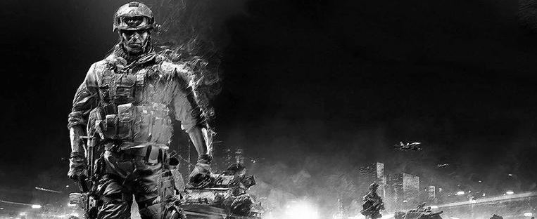

Make Story, Not War
When I heard that Battlefield 4 was banned in China due to its”inaccurate portrait of a hostile China” and “threat to national security”, I wasn’t surprised. After all, our government has a long history of banning video games on unreasonable basis. I bought the game the next day after I knew it was banned because it made me feel curious (rebellious?). Politics aside, what I find frustrating is the single player story.
As gamers, we have fought against the Nazi Germany soldiers, the Japanese, the Russians, the Arabs, the Vietnamese, the North Koreans, recently, the South Americans (in Call of Duty: Ghost) and now, the Chinese. We have killed pretty much people from all over the world.
I understand a good story should always have conflict—conflict between man and nature, a character’s different personalities or in this case, between nations. However, recent FPS titles have failed to connect to the audience because they put too much emphasize on the enemy/stage of battle instead of the idea that should be fought against.
Saving Private Ryan is a good movie not because it is about fighting German soldiers. Instead, it shows the heroic action of a group of ordinary soldiers fighting against nearly impossible odds to bring one solider back home. Without the idea, the film will only be a montage of special effects. Spec Ops: the line asks gamers to make excruciating decisions, thus allows us to experience not only the desolation of a once prosperous Dubai, the barren landscape but also the torment of war inflicted on the protagonist. These elements--the real conflict, are missing in the Battlefield 4 single player campaign.
As a matter of fact, in an interview at TGS 2013, DICE producer Daniel Matros mentioned they chose Shanghai as the map of multiplayer and single player campaign because it would be cool to fly helicopters through the skyscrapers and there would be battles between infantry and all kinds of vehicles. This would be fine for a multiplayer campaign, and as it turned out, the Battlefield 4 multiplayer is much more than just fine! But a good stage is not enough for a convincing and meaningful story. That is where Battlefield 4 failed. Of course, Battlefield has always focused more on its multiplayer department. Nevertheless, future FPS can learn a thing or two from its mediocre single player—instead of thinking who we should fight against or where we should fight at, the real question should be what we fight for.